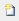
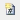
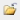
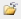
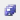
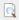

File Menu
The following commands are available from the File menu.
File Menu | |
| Description |
 New Graphic | Add a new blank tabbed graphic canvas in the work area. |
| Add a new blank tabbed Symbol canvas in the work area. |
 New Graphic Template | Add a new blank tabbed graphic canvas template in the work area. |
| Open the Open dialog box to browse to select a XAML file that opens a new tab in the work area. |
 Close | Open the Save dialog box to save and close the active graphic. |
 Close All | Open the Save dialog box to save and close the active graphic. The Save As dialog box re-launches until all the open graphics are closed. |
| Open the Save dialog box the first time you save a graphic. After the initial save, the graphic is automatically saved and the Save dialog box does not display. |
 Save All | Open a File dialog box to select a file name to save the active graphic as a XAML file. The File dialog box is re-launched until all graphics have been saved or closed |
| Open a Save As dialog box to select a file name to save the active graphic as a XAML file |
Page Setup | Open the Page Setup view to set your printing parameters. |
 Preview | Open the Print Preview pane and display the current document as it will print. |
Open the Print dialog box to print your current document. | |
About | Display the current version number of the Graphics Editor. |
Consistency Checker | Open the Inconsistency Checker pane to view and troubleshoot any inconsistencies in the open graphics related to invalid references to either a missing data point or a missing graphic file. |
 New Symbol
New Symbol Open
Open Save
Save Save As
Save As